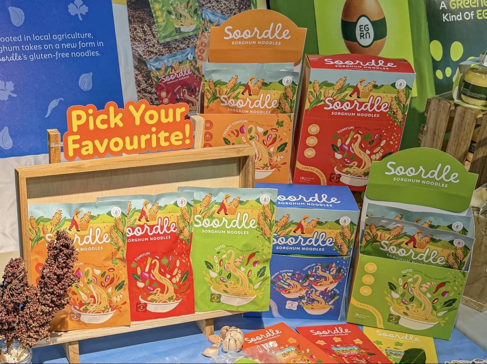
Brand Identity & Packaging Design "Soordle"
A branding project for a playful, gluten-free instant noodle brand made from local grains.
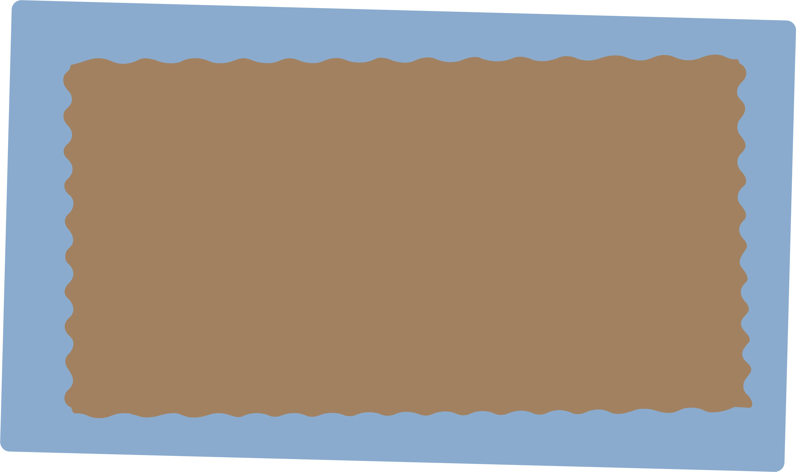
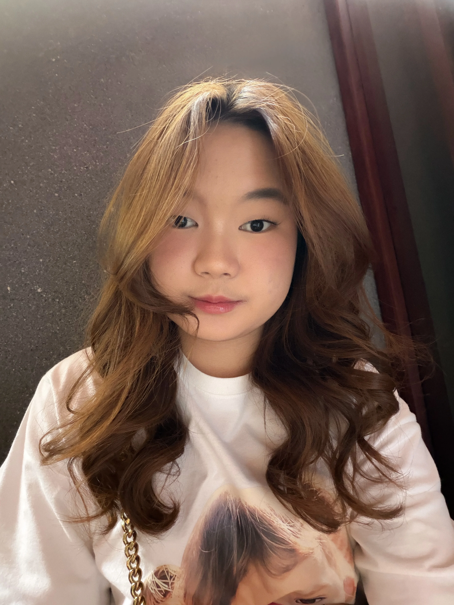
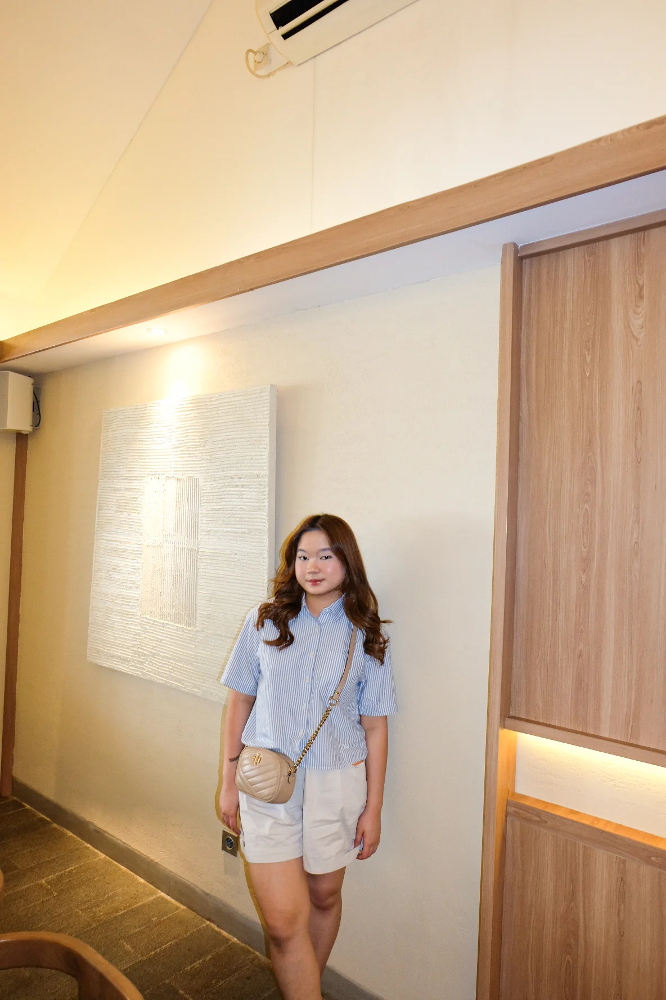
My name is Kerlyn Lawrance, a 20 year old Visual Communication Design (DKV) student at Universitas Pelita Harapan, class of 2024, originally from Medan, North Sumatra. I am passionate about learning, exploring new ideas, and continuously developing my skills to create engaging and meaningful design works.
Thank you for viewing my portfolio. Each piece reflects my creativity, technical skills, and passion for creative expression. I invite you to explore my journey and the ideas behind the works presented here.
Visual Communication Design (DKV) 2024–Present
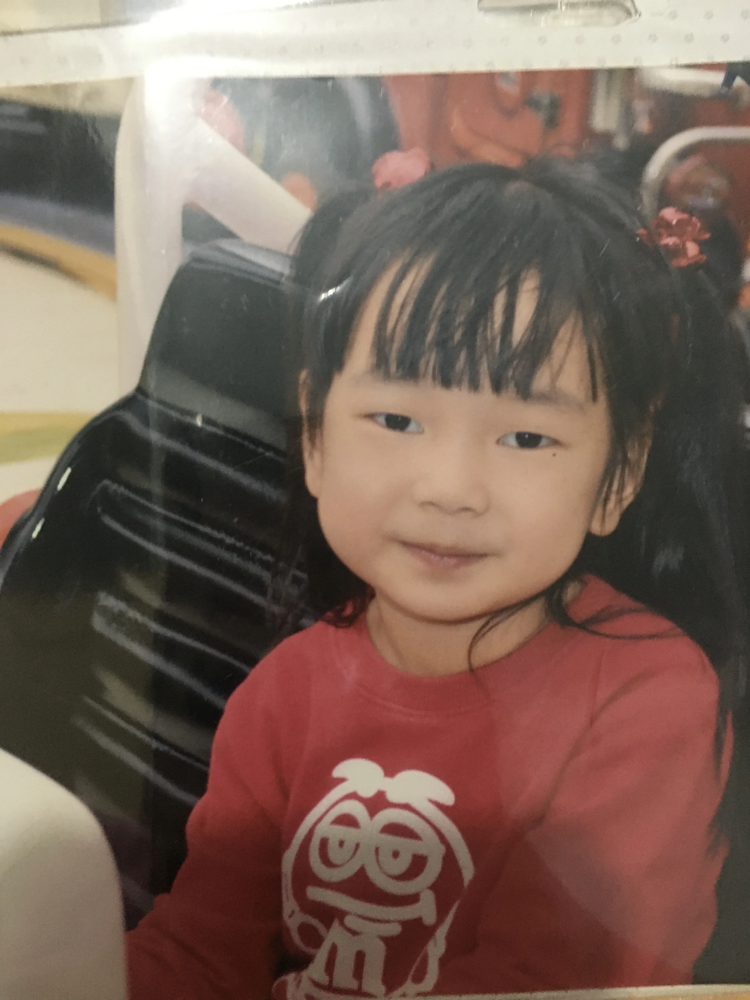
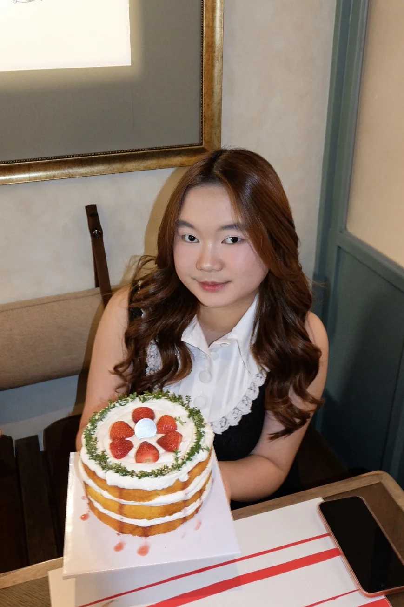
Every cloud is a new step, every star is a little achievement. Help me to reach new heights!
A little collection of things I've created, explored, and learned along the way. From playful experiments to
meaningful projects,
each piece represents a different perspective, a new discovery, and a little part of who I am as a designer.

A branding project for a playful, gluten-free instant noodle brand made from local grains.
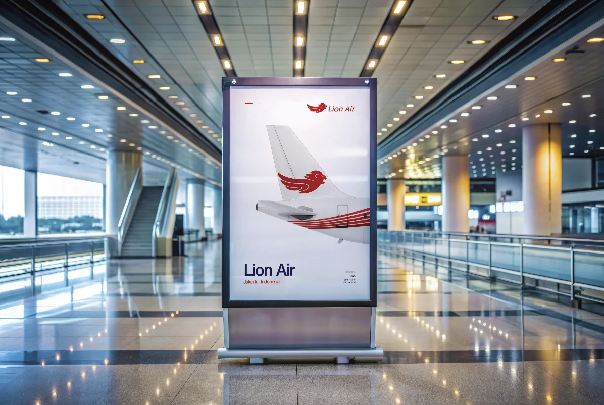
A rebranding project to redefine Lion Air as an affordable and reliable airline.
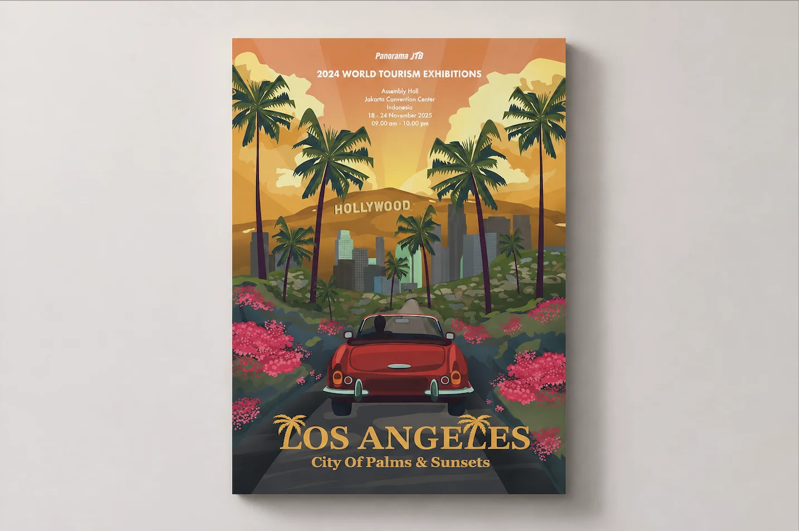
A travel poster design inspired by the vibrant culture and iconic identity of Los Angeles.
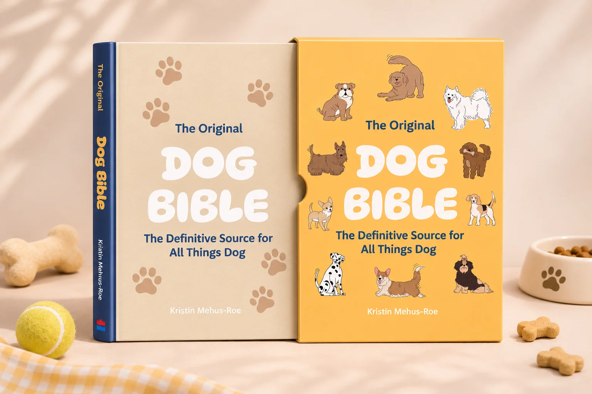
An editorial book layout project exploring the world of dogs through engaging visuals and organized content.
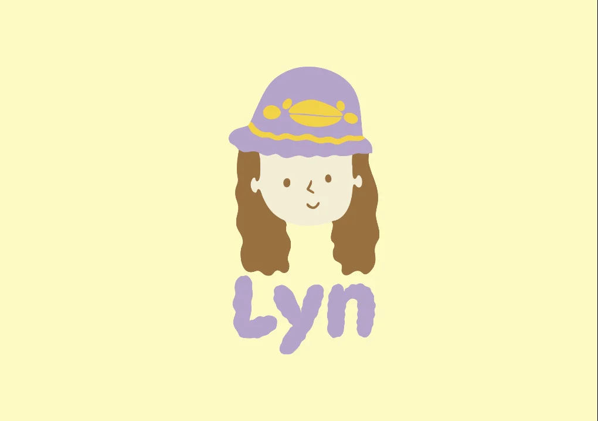
A personal branding project exploring self identity through icons, symbols, and visual expression.
Click any glowing lantern to read an anonymous wish from around the world.